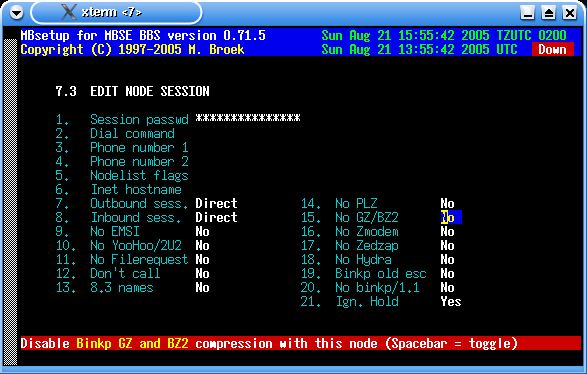
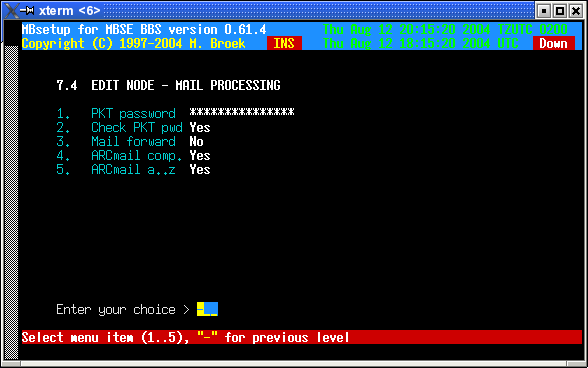
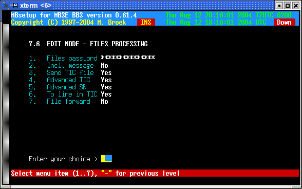
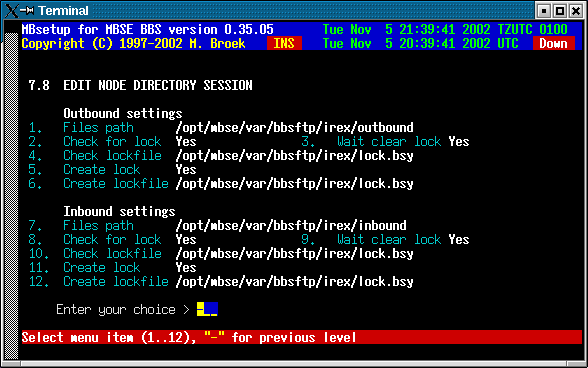
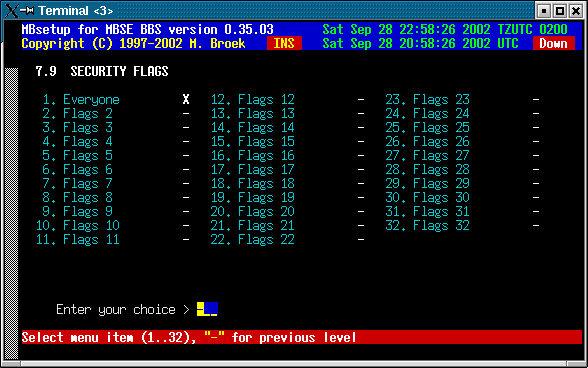
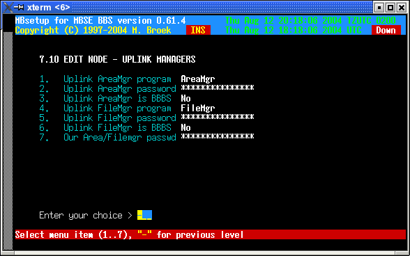

Last update 21-Aug-2005
MBSE BBS Setup - Fidonet nodes.
Introduction
Unlike many other bbs packages, for each node you need only one record. If you have a relation with a node for one network with costsharing, and other networks without costsharing you need two records for that node. For each node you can setup the aka's, mail, files and session handshake. There are ten screens for each node.
1. Edit general setup
This screen has the general information for the node. The contact info fields are just for private use, these fields are only used in this screen. The Outbox dir is for files to sent to the node, all file you put in there will be sent to the remote if user mbse has read/write access to the file. Only real files are allowed, not symlinks etc.
| Sysop name | The name of the system operator. The name entered here is used in Areamgr and Filemgr messages etc. |
|---|---|
| Outbox dir | Private extra outbound directory for this node. Any file dropped into this directory will be sent to the node and removed after it is sent. |
| Pvt. phone | Contact info, node private phone. |
| Pvt. fax | Contact info, node private fax. |
| Pvt. cellphone | Contact info, node cellphone (GSM). |
| Pvt. e-mail | Contact info, node e-mail address. |
| Pvt. remark | Contact info, node remark. |
| Route via | A route via Fido address. All mail for this node will be send via this Aka, even mail and files for other networks. This can be usefull if this node has internet access so you can send everything to this node over the internet. Note that to force calling this node via internetr, ISDN or pots can also be done by using nodelist flags override. See section 3. This setting is more usefull to force routing via another node or aka. |
| Netmail direct | Set "direct" flag in netmail to this node. |
| Netmail crash | Send netmail always "crash" to this node. |
| Netmail hold | Put mail on "hold" for this node. |
| Pack mail | Should net- and echomail be packed in arcmail archives. |
| Send notify | Send automatic generated notify messages. |
| Language | The language to use for areamgr msgs. |
| Deleted | If this node must be deleted. |

2. Edit nodes aka's
In this screen you can setup 20 aka's for the node.
3. Edit node session
In this screen you can setup the session defaults.
| Session passwd | This is the mailer session password. |
|---|---|
| Dial command | You can put an override here for the normal dial command. If you leave this empty the command from the modem setup is used. |
| Phone number 1 | An alternative phone number to dial. |
| Phone number 2 | An alternative phone number to dial. Use these above commands if the node has another phone number as mentioned in the nodelist. |
| Nodelist flags | Override for the nodelist flags, the nodelist flags are completly ignored if you enter something here so make sure all flags you need are here. All aka's of this node will use the same flags. This can be usefull to force calling this node via the internet and to force a certain protocol. |
| Inet hostname | The FQDN hostname or IP address of this node. This replaces the original system name from the nodelist and this is then used to make the internet TCP/IP connection. This can be usefull if the FQDN is not present in the nodelist. |
| Outbound sess. | Outbound session method, choices are Direct and Directory. Direct means normal classic mailer connections. Directory means that everything is put in a directory from which the other node can fetch the mail and files using ftp protocol. |
| Inbound sess. | Inbound session method, choices are Direct and Directory. Direct means normal classic mailer connections. Directory means that inbound mail and files are expected in a directory were it is stored by the node using ftp protocol. |
| No EMSI | Disable EMSI handshake. |
| No YooHoo/2U2 | Disable FTSC-0006 handshake. |
| No Filerequest | Disable filerequest from this node. |
| Don't call | Do not call this node. |
| 8.3 names | Set this if the node only accepts 8.3 filenames. |
| No PLZ | Disable PLZ compression on outgoing calls with the binkp protocol. |
| No GZ/BZ2 | Disable GZ and BZ2 compression on outgoing calls with the binkp protocol. |
| No Zmodem | Disable Zmodem protocol. |
| No Zedzap | Disable Zedzap protocol. |
| No Hydra | Disable Hydra protocol. |
| Binkp CRC32 | Enable CRC32 file transfer checks. |
| Binkp old esc | Some systems followed the wrong character escape method as published in FSP-1011 revision 3. For these systems turn this flag on or you won't be able to send long filenames with spaces in the name or other special characters. Such known systems are Argus and Irex upto 2.29. Others may exist, even some older mbse versions. |
| No binkp/1.1 | Irex from version 2.24 at least upto 2.29 have a buggy binkp/1.1 implementation. Set this to Yes for nodes that use one of these Irex versions and the binkp session will fall back to the binkp/1.0 protocol. |
| Ign. Hold | Ignore the nodelist flags Hold or Down. Set this only if you want to call a node that is Down or Hold and you know that you can connect it. |

4. Edit node - mail processing
| PKT password | The password to insert in .pkt files. |
|---|---|
| Check PKT pwd | Check password in received .pkt files. If not, errors or missing passwords are only logged. If set, errors or missing password are refused and the .pkt files are renamed to .bad |
| Mail forward | Not in use yet. |
| ARCmail comp. | Use ARCmail 0.60 file naming convention for out of zone mail. |
| ARCmail a..z | Allow a..z last character for ARCmail filenames. |

5. Edit mail groups
Here you can tag which mail groups are available for this node. Note that all groups are visible here, even for networks this node has no aka's in. Be carefull not to allow a node to connect areas from networks he has no aka in.
6. File setup
| Files password | The password for .tic files. |
|---|---|
| Incl. message | Send a netmail message for each file to send. |
| Send TIC file | Send .tic file to this node. |
| Advanced TIC | Send advanced or standard .tic files. |
| Advanced SB | Send advanced Seen-By lines, some systems can't handle this! |
| To line in TIC | Send the To line in the ticfile. Some braindead systems will forward this line instead of processing it and then the next system in the line will fail. |
| File forward | Forward TIC files for this node (not yet). |

7. File groups
The same story as for mail groups is true for the file groups.

8. Directory session
Setup in this screen is needed if you selected Inbound and or Outbound session
as Directory session. The node is then getting and bringing mail using the ftp
protocol and no normal mailer connects are being used anymore.
This may be a good solution for points, they only need a simple mailreader and a
tosser. The mail is transferred by the mbfido program, during the toss or
tic command after the normal inbound is processed mbfido will look for nodes inbound
directories to process. When mail is added to the outbound, mail for nodes with
directory sessions is not stored in the normal Binley Style Outbound but in the
session outbound directory.
You need to setup a ftp account for this node and the best thing is to
set this up so that the other node is forced in a chroot environment, ie. make
it so that the node only sees his own directories and cannot leave that. The ftp
account needs to be a member of group bbs because mbfido needs access to the
files as well as the node. The nodes account needs also to be a member of group
bbsftp for the chroot environment.
The node needs umask 002 so that files that he puts
there will have group read/write access. During toss mbfido also stores the
files with group read/write access so that the node can remove the files when he
has fetched all files. Directory locking is supported and is compatible with
other mailers that support ftp. Here is a small sample of protftp.conf for use
with directory sessions:
# This is /etc/proftpd.conf for use with mbsebbs ftp mail
# sessions and anonymous ftp access.
# It assumes that you have a user/group "nobody" and "ftp"
# for normal/anonymous operation.
# It also assumes you have a group bbsftp were ftp mail users
# must be a member of.
#
ServerName "Seaport ProFTPD server"
ServerType inetd
DefaultServer on
#
# Port 21 is the standard FTP port.
Port 21
# Umask 002 is to force new dirs and files to be group writable.
Umask 002
#
# To prevent DoS attacks, set the maximum number of child processes
# to 30.
MaxInstances 30
#
# Set the user and group that the server normally runs at.
User nobody
Group nogroup
#
SystemLog /var/log/proftpd
TransferLog /var/log/xferlog
#
# Anonymous ftp and members of group bbsftp have a chroot environment.
DefaultRoot ~ bbsftp
#
# Normally, we want files to be overwriteable.
<Directory /*>
AllowOverwrite on
</Directory>
#
# A basic anonymous FTP server configuration.
# To enable this, remove the user ftp from /etc/ftpusers.
<Anonymous ~ftp>
RequireValidShell off
User ftp
Group ftp
# We want clients to be able to login with "anonymous" as well as "ftp"
UserAlias anonymous ftp
#
# Limit the maximum number of anonymous logins
MaxClients 50
#
# We want 'welcome.msg' displayed at login, and '.message' displayed
# in each newly chdired directory.
DisplayLogin welcome.msg
DisplayFirstChDir .welcome
DisplayReadme README
#
# Display .dotfiles and .dirs
LsDefaultOptions "-a"
#
# Limit WRITE everywhere in the anonymous chroot
<Limit WRITE>
DenyAll
</Limit>
#
# An upload directory that allows storing files but not retrieving
# or creating directories.
<Directory incoming/*>
<Limit READ>
DenyAll
</Limit>
<Limit STOR>
AllowAll
</Limit>
</Directory>
#
</Anonymous>
Here are some examples to create an account, first create the extra group
bbsftp:
groupadd bbsftpThen create accounts like this:
useradd -g bbs -G bbsftp -d /opt/mbse/var/bbsftp/irex -s /bin/bash -c "FTP Mail account" irexThen give the node a password for the ftp login. Note that this account has a shell, proftpd needs a valid shell to allow access. If the node tries to telnet to your bbs he can't login with this account if you use mblogin, this is because the node is not in the bbs userfile. If you system allows it, the node can access the shell using rlogin or ssh.
Now the items to setup for the directory sessions:
| Outbound settings | |
|---|---|
| Files path | The path were to store the outbound mail and files. |
| Check for lock | If we need to check for a lockfile before adding files. |
| Wait clear lock | Wait for the lock to clear if present or not. If set to yes and there is a lock created by the node then mbfido will wait for maximum 10 minutes for the lock to disappear. If set to no, mbfido skips this node and will add mail and files at a later time. |
| Check lockfile | The full filename and path of the lockfile to check for. |
| Create lock | If mbfido should create a lock during the time it will add mail and files. |
| Create lockfile | The full filename and path of the lockfile to create. |
| Inbound settings | |
| Files path | The path from were to get the inbound mail and files. |
| Check for lock | If we need to check for a lockfile before getting files. |
| Wait clear lock | Wait for the lock to clear if present or not. If set to yes and there is a lock created by the node then mbfido will wait for maximum 10 minutes for the lock to disappear. If set to no, mbfido skips this node and will scan this directory at a later time. |
| Check lockfile | The full filename and path of the lockfile to check for. |
| Create lock | If mbfido should create a lock during the time it will get mail and files. |
| Create lockfile | The full filename and path of the lockfile to create. |

9. Security
This will set the security bits for the node. These bits can be used to give access or deny access to certain echomail areas or tic file areas. Default bit 1 is set for each node.

10. Area and File managers
This screen sets names and passwords of the uplink managers, also our own password is set here.
| Uplink AreaMgr program | The name of the Areamgr program of this node. This could be AreaFix, AreaMgr etc. |
|---|---|
| Uplink AreaMgr passowrd | The password for the Areamgr of this node. |
| Uplink AreaMgr is BBBS | If the uplink uses BBBS software set this to Yes. |
| Uplink FilMgr program | The name of the Filemgr progrom of this node. This could be FileMgr, Allfix, Raid etc. |
| Uplink FileMgr password | The password of the Filemgr if this node. |
| Uplink FileMgr is BBBS | If the plink uses BBBS set this to Yes. |
| Our Area/Filemgr passwd | Our own Area/Filemgr password for this node to send to our node. |

11. Statistics
In this statistics screen you can see the mail and files flow with this node. Values are stored for the current week, the previous week, the current month and previous month and the overall total since you defined this node. There are actual 12 months of statistics stored in the nodes record, only 2 are visible.
 Back to index
Back to index